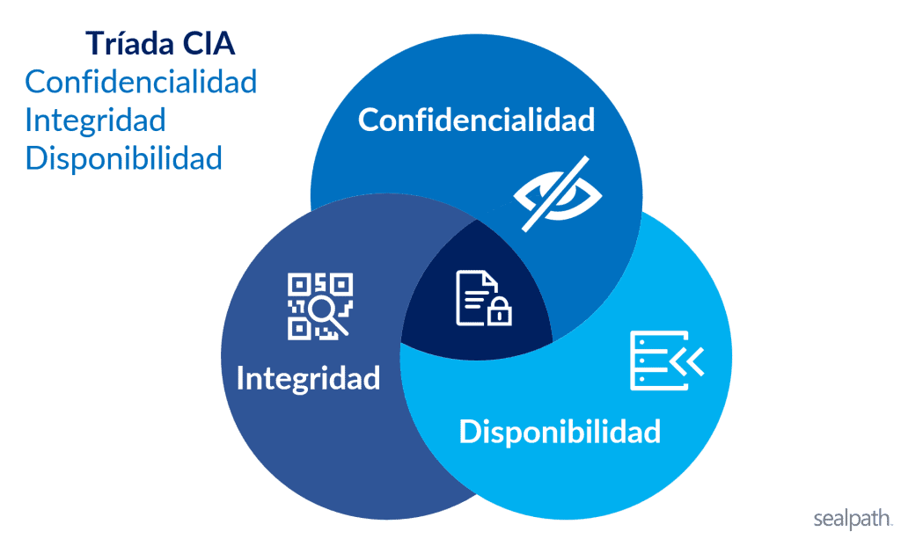

Introducción
La seguridad de la información constituye un pilar fundamental en los entornos digitales actuales, donde los sistemas dependen de la correcta protección de los datos, los servicios y las identidades. Modelos conceptuales como la arquitectura de seguridad X.800 y el glosario de seguridad RFC 4949 permiten clasificar, analizar y comprender los distintos tipos de incidentes de seguridad desde un enfoque estructurado, más allá de la simple presencia de malware o ataques visibles. A través de estos marcos, es posible identificar qué servicios de seguridad son comprometidos, el tipo de amenaza involucrada y el impacto real sobre la organización.
En la presente actividad se analizan diez escenarios representativos de incidentes de seguridad informática, tanto internos como externos, que afectan de manera directa la confidencialidad, integridad, disponibilidad, autenticación, control de acceso y no repudio. Cada escenario es evaluado conforme a los servicios definidos en X.800 y a las definiciones del RFC 4949, permitiendo evidenciar que los ataques modernos suelen ser multifase, persistentes y con consecuencias técnicas, operativas y legales significativas. Este análisis busca reforzar la comprensión de la seguridad como un proceso integral que requiere prevención, detección y respuesta adecuada.
Escenario 1
En múltiples incidentes atribuidos al grupo LockBit, organizaciones públicas y privadas han sufrido el cifrado masivo de servidores tras un acceso inicial no autorizado. Antes de ejecutar el ransomware, los atacantes exfiltraron información sensible y posteriormente amenazaron con su publicación, evidenciando un compromiso simultáneo de la confidencialidad, la integridad y la disponibilidad. Desde el enfoque del RFC 4949, el incidente se clasifica como un multi-stage attack con data breach y availability attack, donde la indisponibilidad del sistema es solo una fase final del daño. La ausencia de respaldos inmutables y de detección temprana permitió que el impacto fuera total.
| Elemento | Respuesta |
|---|---|
| Servicios X.800 comprometidos | Confidencialidad de datos, Integridad de datos, Disponibilidad. |
| Definiciones aplicables RFC 4949 |
Data Breach: Divulgación sensible no autorizada. Multi-stage Attack: Serie de pasos (acceso, exfiltración, cifrado). |
| Tipo de amenaza | Externa. Un ataque que altera el estado del sistema y la disponibilidad de los recursos. |
| Vector de ataque | Explotación de vulnerabilidades o credenciales para intrusión y exfiltración de datos antes del cifrado final. |
| Impacto técnico / operativo | Pérdida total de la Triada CIA |
| Medida de control recomendada | Cifrado de datos y respaldos inmutables |
Escenario 2
En diversos casos documentados, bases de datos completas quedaron accesibles públicamente debido a errores de configuración en servicios de almacenamiento en la nube. No existió una explotación técnica sofisticada, sino una falla en el control de acceso, lo que derivó directamente en la pérdida de confidencialidad de los datos. El RFC 4949 describe este tipo de incidentes como misconfiguration y exposure, subrayando que la amenaza no siempre implica malware o intrusión activa. El impacto suele ser legal y reputacional, aun cuando no se pueda demostrar acceso malicioso.
| Elemento | Respuesta |
|---|---|
| Servicios X.800 comprometidos | Control de acceso, Confidencialidad de los datos. |
| Definiciones aplicables RFC 4949 | Misconfiguration: Error en los ajustes del sistema que crea una vulnerabilidad. Exposure: Incidente donde datos sensibles son accesibles a entidades no autorizadas. |
| Tipo de amenaza | Interna. Se produce una revelación de información sin modificar el estado del sistema. |
| Vector de ataque | Configuración errónea por lo que el atacante o usuario simplemente accede a una ruta pública carente de autenticación o cifrado. |
| Impacto técnico / operativo | Acceso masivo a datos sensibles y pérdida de confianza institucional. |
| Medida de control recomendada | Cifrado de datos para que, en caso de exposición, el contenido no sea inteligible. |
Escenario 3
Un proveedor legítimo de software fue comprometido y distribuyó una actualización que incluía código malicioso, afectando a cientos de organizaciones que confiaban en él. Este escenario refleja una violación grave de la integridad de los sistemas y, en muchos casos, de la confidencialidad, al permitir accesos no autorizados posteriores. El RFC 4949 lo identifica como supply chain attack, destacando el abuso de relaciones de confianza. El daño es particularmente crítico porque rompe el supuesto de legitimidad del software firmado.
| Elemento | Respuesta |
|---|---|
| Servicios X.800 comprometidos | Confidencialidad de datos, Integridad de datos, Autenticación. |
| Definiciones aplicables RFC 4949 | Supply Chain Attack: Ataque que apunta a los elementos menos seguros de la cadena de suministro. |
| Tipo de amenaza | Externa. El ataque se origina fuera de la organización afectada, a través del software de un tercero. |
| Vector de ataque | Inserción de código malicioso en el repositorio del proveedor para su distribución masiva. |
| Impacto técnico / operativo | Pérdida de la Integridad del Sistema. |
| Medida de control recomendada | Procedimientos para asegurar que el software sea digno de confianza como una firma digital. |
Escenario 4
Mediante campañas de phishing, atacantes obtuvieron credenciales válidas y accedieron a sistemas corporativos durante meses sin levantar alertas. Aunque la autenticación funcionó técnicamente, el servicio de autenticación fue comprometido al basarse en credenciales robadas, afectando también el control de acceso. Según el RFC 4949, se trata de un credential compromise con authentication failure conceptual, no técnica. La falta de MFA y de monitoreo de comportamiento facilitó la persistencia del atacante.
| Elemento | Respuesta |
|---|---|
| Servicios X.800 comprometidos | Autenticación, Control de acceso. |
| Definiciones aplicables RFC 4949 | Credential Compromise: Posesión de datos de autenticación por un atacante. Authentication Failure: Falla en establecer la validez de una identidad alegada. |
| Tipo de amenaza | Externa: El atacante utiliza técnicas de ingeniería social para obtener acceso. |
| Vector de ataque | Ingeniería Social |
| Impacto técnico / operativo | Acceso persistente no detectado, exposición de información sensible. |
| Medida de control recomendada | Implementación MFA y monitoreo de accesos. |
Escenario 5
En ataques de ransomware avanzados, los atacantes eliminaron o cifraron los respaldos antes de afectar los sistemas productivos. Este hecho compromete directamente la disponibilidad y la integridad de la información, al impedir la recuperación. El RFC 4949 clasifica este comportamiento como data destruction y availability attack, evidenciando intención deliberada de maximizar el daño. La inexistencia de respaldos offline o inmutables convierte el incidente en catastrófico.
| Elemento | Respuesta |
|---|---|
| Servicios X.800 comprometidos | Integridad de datos, Disponibilidad. |
| Definiciones aplicables RFC 4949 | Data Destruction: Alteración deliberada de datos para que no puedan ser recuperados. Availability Attack: Acción que impide el acceso autorizado a recursos o servicios. |
| Tipo de amenaza | Externa: El ataque es perpetrado por un agente externo que busca la denegación de servicio. |
| Vector de ataque | Escalada de Privilegios y Movimiento Lateral. |
| Impacto técnico / operativo | Incapacidad de Recuperación |
| Medida de control recomendada | Uso de respaldos offline |
Evidencia y material multimedia
Triada CIA

Video demostrativo
Escenario 6
Un empleado con acceso legítimo extrajo bases de datos completas y las vendió a terceros, sin explotar vulnerabilidades técnicas. El servicio afectado fue principalmente la confidencialidad, junto con fallas en el control de acceso por exceso de privilegios. El RFC 4949 define este escenario como insider threat, destacando que el riesgo interno puede ser tan grave como el externo. La carencia de monitoreo y de políticas de mínimo privilegio fue determinante.
| Elemento | Respuesta |
|---|---|
| Servicios X.800 comprometidos | Confidencialidad de datos, Control de acceso. |
| Definiciones aplicables RFC 4949 | Insider Threat: Individuo con acceso legítimo que abusa de sus privilegios para causar daño. |
| Tipo de amenaza | Interna: El ataque es perpetrado por un usuario legítimo dentro del dominio de seguridad de la organización. |
| Vector de ataque | Abuso de privilegios legítimos |
| Impacto técnico / operativo | Exfiltración masiva de datos críticos, ventajas competitivas y graves sanciones legales. |
| Medida de control recomendada | Aplicar políticas para limitar el acceso. |
Escenario 7
Tras un ataque, los registros del sistema quedaron cifrados o alterados, impidiendo reconstruir la secuencia de eventos. Esto compromete la integridad de los datos y el no repudio, ya que no es posible demostrar qué ocurrió ni quién fue responsable. Desde el RFC 4949, se trata de una violación de evidentiary integrity y del audit trail. El impacto no solo es técnico, sino también probatorio y legal.
| Elemento | Respuesta |
|---|---|
| Servicios X.800 comprometidos | Integridad de datos, No repudio. |
| Definiciones aplicables RFC 4949 | Audit Trail: Conjunto de registros que permiten la reconstrucción de la secuencia de eventos. Evidentiary Integrity: Propiedad de que la evidencia digital no ha sido alterada. |
| Tipo de amenaza | El ataque es perpetrado por un agente externo que busca evadir la detección tras una intrusión. |
| Vector de ataque | Modificación de registros |
| Impacto técnico / operativo | Incapacidad de rastrear las acciones del ataque. |
| Medida de control recomendada | Notificaciones inmediatas ante la alteración de datos. |
Escenario 8
Una actualización mal ejecutada provocó la caída simultánea de múltiples servicios críticos a nivel global. Aunque no existió un atacante, el servicio de disponibilidad fue gravemente afectado. El RFC 4949 contempla estos eventos como operational failure, recordando que la seguridad también se ve afectada por errores internos. La falta de pruebas previas y planes de reversión amplificó el impacto.
| Elemento | Respuesta |
|---|---|
| Servicios X.800 comprometidos | Disponibilidad. |
| Definiciones aplicables RFC 4949 | Operational Failure: Interrupción del servicio debido a errores humanos, de proceso o de sistema. |
| Tipo de amenaza | Interna. Error en procesos internos. |
| Vector de ataque | Error en actualización |
| Impacto técnico / operativo | Interrupción Crítica del Servicio |
| Medida de control recomendada | Implementación de pruebas antes de poner en marcha la actualización. |
Escenario 9
Atacantes replicaron sitios y correos oficiales para engañar a ciudadanos y obtener información sensible. Este escenario afecta la autenticación, al suplantar identidades legítimas, y la confidencialidad de los datos recolectados. El RFC 4949 lo clasifica como masquerade y phishing, subrayando el componente de ingeniería social. La ausencia de mecanismos de autenticación del dominio y de concientización facilitó el éxito del ataque.
| Elemento | Respuesta |
|---|---|
| Servicios X.800 comprometidos | Autenticación, Confidencialidad de datos. |
| Definiciones aplicables RFC 4949 | Masquerade: Pretensión de una entidad de pasar por otra diferente para obtener acceso. Phishing: Técnica de ingeniería social para obtener credenciales o datos sensibles. |
| Tipo de amenaza | Externa. El ataque proviene de actores ajenos a la organización que operan desde el exterior para engañar a los usuarios. |
| Vector de ataque | Ingeniería Social, Replicación de sitios. |
| Impacto técnico / operativo | Obtención masiva de credenciales o información personal. |
| Medida de control recomendada | Implementación de autenticación para correos oficiales. |
Escenario 10
En algunos incidentes, tras exfiltrar información, los atacantes ejecutaron acciones destructivas para borrar sistemas completos y eliminar rastros. Se produce un compromiso total de la confidencialidad, la integridad y la disponibilidad, configurando uno de los peores escenarios posibles. El RFC 4949 describe este patrón como destructive attack, donde el objetivo no es solo el lucro, sino el daño irreversible. La detección tardía impidió cualquier contención efectiva.
| Elemento | Respuesta |
|---|---|
| Servicios X.800 comprometidos | Confidencialidad de datos, Integridad de datos, Disponibilidad. |
| Definiciones aplicables RFC 4949 | Destructive Attack: Ataque diseñado para causar daños irreversibles. |
| Tipo de amenaza | Externa: El ataque es perpetrado por un agente externo con objetivos de sabotaje y exfiltración. |
| Vector de ataque | Exfiltración de datos y destrucción masiva del sistema. |
| Impacto técnico / operativo | Pérdida definitiva de activos digitales y capacidad operativa. |
| Medida de control recomendada | Identificación en tiempo real de la exfiltración masiva antes de la fase destructiva. |
Reflexión técnica
El análisis de los distintos escenarios demuestra que los incidentes de seguridad rara vez afectan a un solo servicio de manera aislada por el contrario, la mayoría compromete simultáneamente múltiples componentes de la arquitectura de seguridad, generando impactos acumulativos que pueden resultar críticos para las organizaciones. La aplicación de los conceptos del RFC 4949 y de los servicios definidos en X.800 permite clasificar estos eventos de forma precisa, facilitando la identificación del tipo de amenaza, el vector de ataque y las debilidades explotadas.
Asimismo, queda en evidencia que muchas brechas de seguridad no se originan únicamente por ataques sofisticados, sino también por errores de configuración, fallas operativas y abusos de privilegios legítimos. La ausencia de controles como respaldos inmutables, autenticación multifactor, monitoreo continuo y políticas de mínimo privilegio amplifica el impacto de los incidentes y dificulta su contención. En conclusión, la seguridad de la información debe entenderse como una responsabilidad continua que combina tecnología, procesos y factor humano, donde la prevención y la detección temprana son clave para reducir riesgos y preservar la continuidad operativa.
10. Referencias técnicas
- Shirey, R. (2007). Internet Security Glossary, Version 2 (RFC 4949). Internet Engineering Task Force. https://datatracker.ietf.org/doc/html/rfc4949
- Unión Internacional de Telecomunicaciones. (1991). Arquitectura de seguridad para la interconexión de sistemas abiertos para aplicaciones de las CCITT (Recomendación ITU-T X.800). https://www.itu.int/rec/T-REC-X.800-199103-I/es